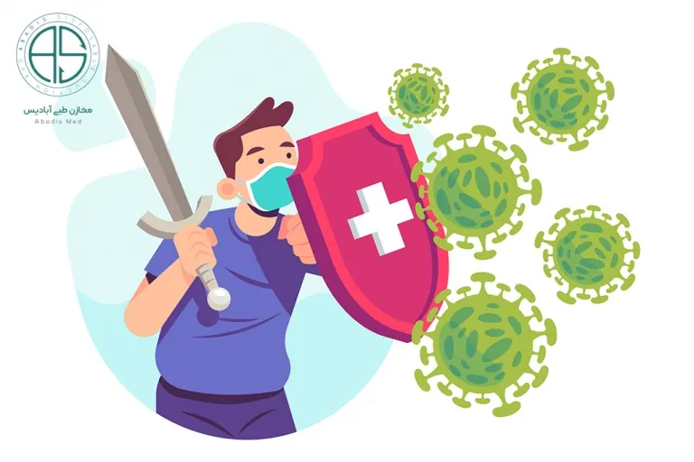

بررسی میزان بروز عفونت بیمارستانی دریکی از بیمارستانهای استان قم(سال ۸۶)
محدثه لاری پور۱*(نویسنده مسئول)،شیرین فرساد۲
۱. دانشجوی دکتری قارچ شناسی دامپزشکی، دانشگاه آزاد اسلامی واحد علوم و تحقیقات تهران
۲. عضو هیئت علمیدانشگاه پیام نور قم
آدرس مکاتبه ای: تهران–صندوق پستی:۱۴۵۶۶–۱۴۵۱۶،تلفاکس:۶۶۰۳۵۰۳۱
پست الکترونیک:mlarypoor@yahoo.com
مقاله پیش رو در مجله میکرب شناسی پزشکی ایران، سال ۵ شماره ۶، پاییز ۱۳۹۰ به چاپ رسیده است.
چکیده
زمینه و اهداف
این مطالعه به ارائه اطلاعات جدید در زمینه شیوع نوع عوامل میکروبی دخیل در عفونتهای بیمارستانی وعوامل محیطی موثر بر آن در یکی از بیمارستانهای استان قم میپردازد.
مقدمه
هر سال دو میلیون نفر بیمار در بیمارستان دچار عفونت میشوند این عفونتها را که عفونتهای بیمارستانی (Infection Nosocomial) مینامند، عبارتند ازعفونتهایی که به هنگام پذیرش بیمار در بیمارستان وجود نداشته یا در دوره کمون خود بیماری نباشد، که موجب مرگ بیش از ۱۹٫۰۰۰ نفر و تحمیل هزینهای بیش از ۴٫۵ میلیون دلار در سال میباشد.
علیرغم اینکه یک سوم از عفونتهای بیمارستانی قابل کنترل هستند، اما این شکل همچنان در کشورهای توسعه یافته و نیز در حال توسعه به عنوان یک خطر کاملا جدی مطرح است.
مواد و روشها
در این مطالعه توصیفی آیندهنگر، بیماران بستری در بخشهای CCU ،ICU، جراحی مردان و زنان، نفرولوژی، نوزادان، عفونی وغیره از ۱/۱/ ۱۳۸۶ تا۱۳۸۷/۱/۱ مورد بررسی قرار گرفتند.
به این ترتیب که پرستاران در این بخشها اقدام به پر کردن پرسشنامههای با بیان پارامترهایی از جمله نام ونام خانوادگی، سن، جنس، تاریخ بستری، بخش بستری، بیماری علت بستری شدن، بروز عفونت بیمارستانی، محل بروز عفونت بیمارستانی، تاریخ بروز عفونت بیمارستانی، میکردند.
سپس از محل بروز عفونت نمونهگیری کرده و با بررسی نمونه مستقیم وکشت نوع عامل را مشخص مینمودند. نمونههای گرفته شده شامل خلط، خون، ادرار وزخم بود.
برای تحلیل نتایج از آزمون همبستگی استفاده شد.
نتایج
از میان ۲۱۰۵۴ بیمار مورد بررسی در طول یکسال تعداد ۱۰۵ بیمار با متوسط سن (۲۶.۴±۶۴.۱۶) سال و (محدوده سنی بین ۳۰ روز تا ۱۲۶ روز) به عفونت بیمارستانی مبتلا شدند و ۱۹ نفر بعد از ۴۸ ساعت مردند. تعداد زنان بستری شده ی مبتلا به عفونت بیمارستانی ۵۰ نفر وتعداد مردان ۵۵ نفر بودند. میزان بروز عفونت ۳۵ در ده هزار بیمار بود. در این تحقیق باکتریها، ویروسها وقارچها به عنوان عوامل ایجاد کننده عفونت ثانویه در بیماران بستری شده در بیمارستان جدا سازی گردید.
در این مطالعه باکتریهای جدا شده از افراد مبتلا شده به عفونت بیمارستانی به ترتیب عبارتند از:
از ۳۷ (۳۵.۲٪) نفر E.coli
از ۱۴نفر(۳۳/۱۳)Gram positive Cocci
از ۱۲ نفر (۱۱/۴۲) Enterobacter
از۱۰ نفر (۹/۵۲) Alkaligenes
از۹ نفر(۸/۵۷)Klebsiella
از۸ نفر (۷/۶۱) Pseudomonas
همچنین از ۵ نفر(۴/۷۶)HBS Virus و از ۴ نفر (۳/۸۰) HCV Virus جدا شد.
همچنین از ۴ نفر (۳/۸۰) قارچ Candida albicans و از ۲ نفرقارچ (۱/۹۰) Aspergillus جدا شد.
چگالی بروز عفونت در بخشهای ICU ۸۶٫۶۰، درCCU ۳۹٫۶۴، دربخش داخلی ۳۷٫۷۱، در بخش جراحی ۲۸٫۶۷، در ارتوپدی ۱۴٫۱۹، در بخش کودکان ۱۲٫۴۲، درعفونی ۹٫۷۷، در بخش قلب ۵٫۴، در بخش نفرولوژی ۴٫۶۷ و در بخش گوش وحلق وبینی ۲٫۴۴ بیماردر ده هزار بیمار–روز بدست آمد.
بر طبق تست Corrolation ارتباط معنی داری بین افزایش سن وافزایش میزان بروز عفونت بیمارستانی بوضوح دیده شد (۰۱/ ۰< P). همچنین با انجام این تست هیچ ارتباطی بین جنسیت و میزان شیوع عفونت بیمارستانی مشاهده نشد. (۰۵/ ۰> P)
بحث
با توجه به نتایج به دست آمده نشان داده شد که عفونت بیمارستانی با عوامل مشخص در رنج سنی ۶۰–۹۰ سال بیشترین بروز را به دلیل نقصهای سیستم ایمنی، آویتامینوز، دیابت، جراحیها، پنومونی و کادر درمان(عدم رعایت بهداشت توسط پزشک وپرستار) ایجاد میشود. بعد از این رنج در نوزادان بستری بیشترین بروز مشاهده شد. فراوانی نسبی عفونت بیمارستانی در این مطالعه از طریق سوندهای ادراری (۴۲٪)، زخم جراحی شده(۲۴٪)، مجاری تحتانی تنفسی(۱۸٪)، جریان خون(۱۲٪) و باقی ارگانها(۱۴٪)بود، که نشان میدهد عوامل باکتریال وقارچی با تشکیل بیوفیلم بر روی تجهیزات داخل رگی وسوندهای ادراری، منجر به بروز عفونت وحتی مرگ میشوند. لذا توجه به نتایج این گونه تحقیقات و پیشگیری از وخامت حال بیماران و مرگ ومیر آنها با کمیتوجه و رعایت اصول پیشگیری از بروز این عفونتها بسیار ضروری میباشد. نتایج بدست آمده از این تحقیق در مقایسه با تحقیقات دیگر بروز عفونت بیمارستانی کمتری را در این بیمارستان نشان میدهد که به استفاده بموقع مداخلات پزشکی، شستن دستها، آموزش بهداشت، نظارت مستمر مسئولان، استفاده درست از وسایل یکبار مصرف، استفاده کنترل شده آنتی بیوتیکها و مراقبت صحیح از زخمهای ناشی از جراحی مربوط میشود.